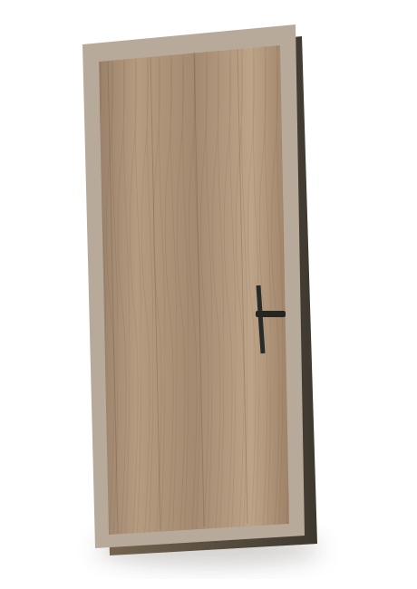

Знайдіть характер
Оберіть колекцію, відтінок і конфігурацію під свій інтер’єр.
Чисті лінії. Тепло натуральних фактур. Деталі, які поєднують ваш інтер’єр.

Оберіть характер оздоблення — від світлого дуба до стриманого графіту.
Двері, перегородки й фурнітура в єдиній естетиці. Демонстраційний каталог.
Перегородка під ваші розміри. Оберіть габарити та скло, щоб побачити орієнтовний деморозрахунок.
Оберіть колекцію, відтінок і конфігурацію під свій інтер’єр.
Для нестандартних виробів потрібен окремий прорахунок і підтвердження.
WooCommerce checkout, оплата та доставка розробляються наступним етапом.